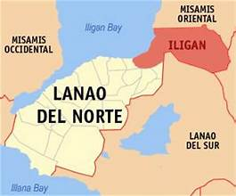

FACTS ABOUT ILIGAN
History
Iligan, officially the City of Iligan (Cebuano: Dakbayan sa Iligan; Maranao: Bandar a Iligan; Filipino: Lungsod ng Iligan), is a 1st class highly urbanized city in the region of Northern Mindanao, Philippines. According to the 2020 census, it has a population of 363,115 people.[3] It is geographically within the province of Lanao del Norte but administered independently from the province. It was once part of Central Mindanao (Region 12) until the province was moved under Northern Mindanao (Region 10) in 2001.[7] Iligan is approximately 90 kilometers away from the capital of the province, Tubod, and approximately 800 kilometers from the capital of the Philippines, Manila. Iligan has a total land area of 813.37 square kilometres (314.04 sq mi), making it one of the 10 largest cities in the Philippines in terms of land area. Among the 33 highly urbanized cities of the Philippines, Iligan is the third-least dense, with a population density of 421 inhabitants per square kilometer, just behind Butuan and Puerto Princesa.
GEOGRAPHY
Iligan is bounded on the north by three municipalities of Misamis Oriental (namely Lugait, Manticao and Opol), to the south by three municipalities of Lanao del Norte (Baloi, Linamon and Tagoloan) and two municipalities of Lanao del Sur (Kapai and Tagoloan II), to the north-east by the city of Cagayan de Oro, to the east by the municipality of Talakag, Bukidnon; and to the west by Iligan Bay. To the west, Iligan Bay provides ferry and container ship transportation. East of the city, flat cultivated coastal land gives way to steep volcanic hills and mountains providing the waterfalls and cold springs for which the area is well known
DEMOGRAPHIC

Population of Iligan City was Recorded at 323 Thousand (Results from the 2010 Census of Population and Housing) Home >Population of Iligan City was Recorded at 323 Thousand (Results from the 2010 Census of Population and Housing) Release Date : Wed, 07/17/2013 - 12:00 Reference Number : 2013-130 Population of Iligan City increased at the rate of 1.25 percent annually Based on the 2010 Census of Population and Housing (CPH), Iligan City, a highly urbanized city in the province of Lanao del Norte, posted a total population of 322,821 persons as of May 1, 2010. This is larger by 37,760 persons compared to its total population of 285,061 persons counted in the 2000 CPH. The increase in the population count from 2000 to 2010 translated to an average annual population growth rate (PGR) of 1.25 percent. This is lower than the 2.32 percent annual PGR of the city between the census years 1990 and 2000. If the average annual PGR recorded at 1.25 percent during the period 2000 to 2010 continues, the population of Iligan City would double in 56 years. Forty years ago, the population of Iligan City was only 104,493 persons. This population size is less than one third of the population of the city in the 2010 CPH.
ECONOMY

Iligan is known as the Industrial Center of the South as its economy is largely based on heavy industries. It produces hydroelectric power for the Mindanao region through the National Power Corporation (NAPOCOR), the site of the Mindanao Regional Center (MRC) housing Agus V, VI, and VII hydroelectric plants. Moreover, Holcim Philippines' largest Mindanao cement plant is located in the city. It also houses industries like steel, tinplate, cement, and flour mills.[citation needed] After the construction of Maria Cristina (Agus VI) Hydroelectric Plant by National Power Corporation (NPC, NAPOCOR) in 1950, the city experienced rapid industrialization and continued until the late 1980s. The largest steel plant in the country, National Steel Corporation (NSC), was also established in 1962.[65] During the 1997 Asian financial crisis, the city experienced a severe economic slowdown. A number of industrial plants were closed, notably the National Steel Corporation.[66] The city saw its economic revival with the reopening of the National Steel Corporation, renamed Global Steelworks Infrastructures, Inc. (GSII) in 2004.[67] In October 2005, GSII officially took a new corporate name: Global Steel Philippines (SPV-AMC), Inc.[68]